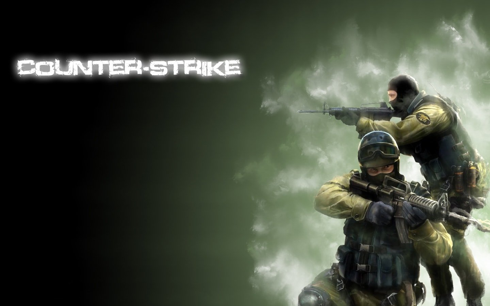
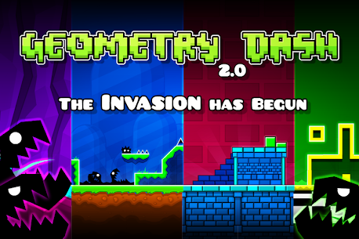
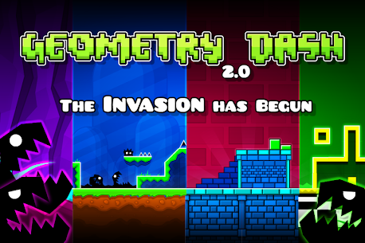
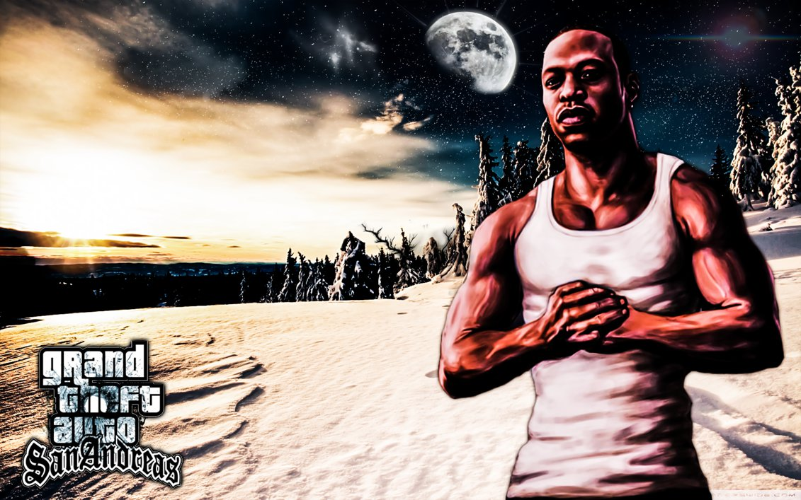
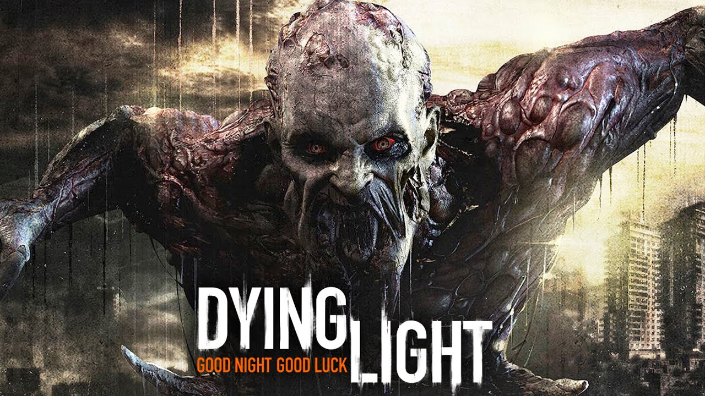
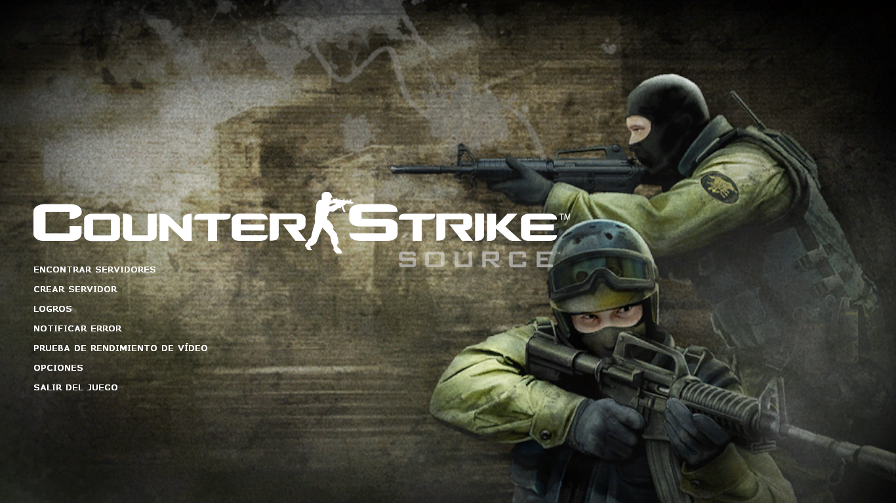
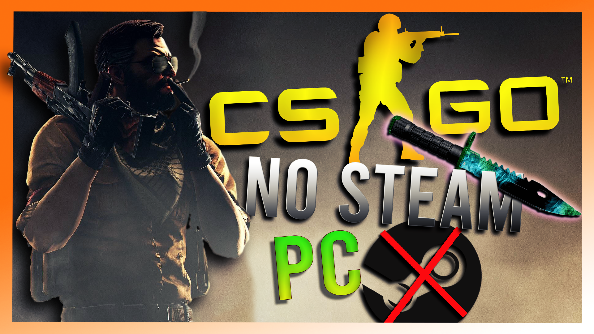

Counter-Strike (comúnmente abreviado como CS) es un videojuego de disparos en primera persona por equipos, los terroristas y los antiterroristas. Se concibió originalmente como un juego de tipo multijugador (ya sea en LAN u online). Counter-Strike es una modificación completa del juego Half-Life, realizada por Minh Le y Jess Cliffe quienes lanzaron la primera versión el 18 de junio de 1999. La última versión del juego es la 1.6, que desde su salida oficial el 15 de septiembre de 2003 ha cosechado un éxito fenomenal en Internet, haciendo de él el juego de acción en primera persona online más jugado, ante juegos más recientes, como su nueva versión, Counter-Strike: Source (o CS: S) basado en el motor Source el cual se ha desarrollado para el juego Half-Life 2.

REQUISITOS MINIMOS
Procesador de 500 MHz
96 MB de RAM
tarjeta de vídeo de 16 MB
Windows XP
SERVIDORES
 

DESCRIPCIÓN
Prepárate para un desafío casi imposible en el mundo de Geometry Dash. Lleve sus habilidades al límite mientras salta, vuela y se abre camino a través de pasajes peligrosos y obstáculos puntiagudos.
¡Juego simple de un toque con muchos niveles que te mantendrán entretenido durante horas!
Características del juego
• ¡Plataformas de acción basadas en el ritmo!
• ¡Muchos niveles con bandas sonoras únicas!
• ¡Construye y comparte tus propios niveles usando el editor de niveles!
• ¡Desbloquea nuevos iconos y colores para personalizar tu personaje!
• ¡Vuela cohetes, voltea la gravedad y mucho más!
• ¡Usa el modo de práctica para mejorar tus habilidades!
• ¡Muchos logros y recompensas!
• ¡Sin compras dentro de la aplicación!
• ¡Ponte a prueba con lo casi imposible!
REQUISITOS MINIMOS
Sistema Operativo: Windows XP
Procesador: 2.0+ GHz
Memoria: 512 MB RAM
Tarjeta gráfica: OpenGL 2.0 support
Disco duro: 100 MB espacio disponible
➤GTA SAN ANDREAS FULL PARA PC

Game Description
Hace cinco años Carl Johnson huyó de los rigores de vivir en Los Santos, San Andreas, una ciudad destrozada por las bandas, las drogas y la corrupción en la que las estrellas de cine y los millonarios hacen lo posible por evitar a los traficantes y a los pandilleros.
Estamos a principios de los 90. Carl tiene que volver a casa. Su madre ha sido asesinada, su familia se ha desmoronado y sus amigos de la niñez van camino del desastre
Nada más volver al barrio, un par de policías corruptos lo acusan injustamente de homicidio. C. J. se ve obligado a emprender un periplo por todo el estado de San Andreas para salvar a su familia y hacerse con el control de las calles.
REQUISITOS MINIMOS
Sistema Operativo: Microsoft Windows 2000/XP
Procesador: 1Ghz Pentium III ó AMD Athlon Procesador
Memoria: 256MB de RAM
Tarjeta gráfica: 64MB Video Card (Geforce 3 ó superior)
Disco duro: 3.6GB de free hard disk space (minimal install)
REQUISITOS RECOMENDADOS
Procesador: Intel Pentium 4 ó AMD Athlon XP Procesador
Memoria: 384MB de RAM (the más the superior!)
Tarjeta gráfica: 128MB (or superior) Video Card (Geforce 6 Series Recomendados)
Disco duro: 4.7GB de free hard disk space (full install)
Tarjeta de sonido: DirectX 9 compatible Tarjeta de sonido (Sound Blaster Auidgy 2 Recomendados)
➤DYING LIGHT FULL PARA PC

Dying Light, desarrollado por Techland para PC, PlayStation 4 y Xbox One, es una aventura de acción en primera persona survival horror con un ciclo día-noche que determinará el nivel de agresividad de nuestros enemigos. ¡Sobrevive en una ciudad devastada por un virus de zombis
➤OPTIMIZADOR MAXIMO FPS
➤AMONG US CON TODO DESBLOQUEADO PARA PC FULL

Among Us es un juego muy parecido al clásico "El asesino" que hemos jugado alguna vez en cartas, pero llevado al mundo de los videojuegos. Estás en una nave espacial, y dos impostores que están "entre nosotros", de ahí el título, tienen que matar a los otro ocho tripulantes antes de que estos los descubran.
➤REQUISITOS MINIMOS
SO: Windows 7 SP1+
Procesador: SSE2 instruction set support.
Memoria: 1 GB de RAM.
DirectX: Versión 10.
Almacenamiento: 250 MB de espacio disponible.
➤COUNTER STRIKE SOURCE FULL PARA PC ULTIMA VERSION

Counter-Strike: Source (CS:S) es un videojuego de la serie Counter-Strike surgido originalmente como "mod" del juego Half-Life de Valve y publicado por Steam. Al igual que sus predecesores, es un juego de estilo FPS (First Person Shooter) y fue lanzado al mercado el 7 de octubre de 2004. Se diferencia principalmente de sus antecesores en que utiliza un nuevo motor de videojuego conocido como Source (el mismo que utiliza Half-Life.
el cual es más potente y posee gráficos mejorados, admitiendo por primera vez en la serie de efectos como Normal mapping, reflejos y HDR; también utiliza el motor físico Havok, que hace que efectos físicos como ragdolls y detección de colisión compleja (en lugar de usar cajas de colisión se usan polígonos) sean posibles.
REQUISITOS MINIMOS
Procesador a 1.7 GHz
512 MB de RAM
gráfica compatible con DirectX® 8.1
Windows® 7 (32 y 64 bits) / Vista / XP
REQUISITOS RECOMENDADOS
Procesador Pentium 4 (3 GHz o más)
1 GB de RAM
gráfica compatible con DirectX® 9
Windows® 7 (32 y 64 bits) / Vista / XP
➤CSGO NO STEAM + ONLINE PARA PC FULL

Counter-Strike: Global Offensive (CS:GO) es un videojuego de disparos en primera persona desarrollado por Valve Corporation y Hidden Path Entertainment. Es el cuarto juego de la saga Counter-Strike. Fue lanzado al mercado en agosto de 2012 para las plataformas de Microsoft Windows, macOS y Xbox 360 y PlayStation 3. La versión para Linux estuvo disponible al público en septiembre de 2014.
El juego consiste en dos equipos, los Terroristas y los Antiterroristas (T y CT, respectivamente), los cuales se enfrentan entre ellos en diferentes modos de juego. El modo más común es en el cual el bando Terrorista tienen que plantar y defender una bomba mientras los Antiterroristas defender las zonas de plante de la bomba y su posterior desactivación.
➤REQUISITOS MINIMOS
Sistema operativo: Windows XP / Vista / 7
Procesador: Intel Core™ 2 Duo E6600 / AMD Phenom™ X3 8750 o superior
Memoria: 1 GB de RAM para XP / 2 GB de RAM para Vista
Disco Duro: Al menos 7.6 GB de espacio libre
Tarjeta de Vídeo: 256 MB de VRAM o superior, compatible con DirectX 9 y con soporte para Pixel Shader 3.0
➤REQUISITOS RECOMENDADOS
Sistema operativo: Mac OS X 10.6.6 o posterior
Procesador: Intel Core Duo a 2 GHz o superior
Memoria: 4 GB de RAM
Disco Duro: Al menos 7.6 GB de espacio libre
Tarjeta de Vídeo: ATI Radeon HD 2400 o superior / nVidia 8600M o superior
➤LAUNCHER